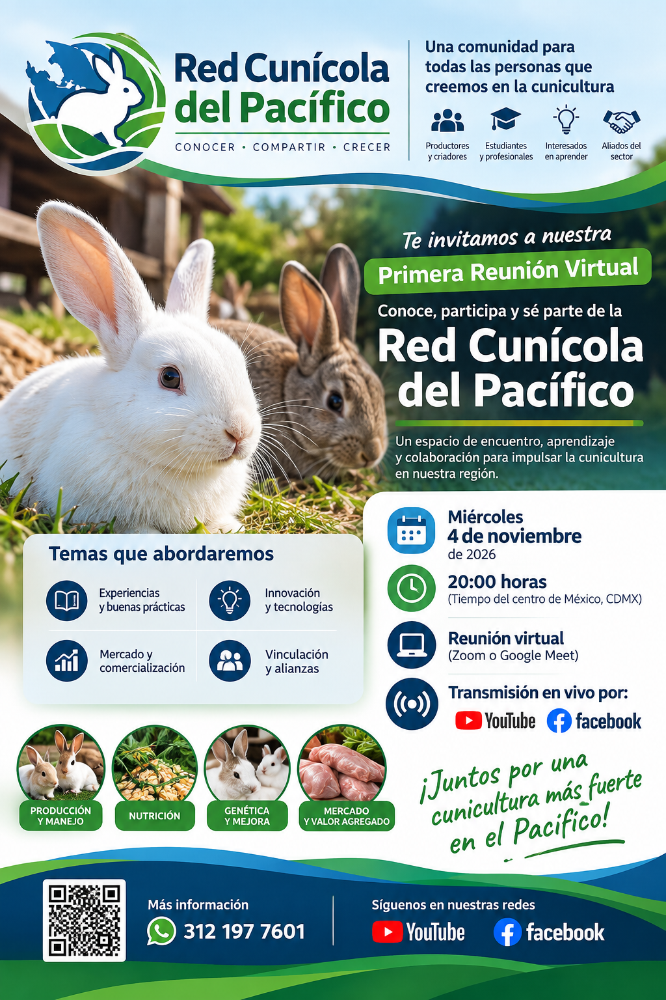

La Red Cunícola del Pacífico (RCP) es un espacio para reunir a quienes producen, crían, estudian, investigan o simplemente quieren aprender sobre cunicultura.

La RCP busca crear vínculos entre personas y organizaciones para compartir conocimientos, experiencias y oportunidades alrededor de la cunicultura.
Charlas y encuentros con especialistas y personas con experiencia práctica.
Conecta productores, estudiantes, profesionales, emprendedores y aliados del sector.
Comparte buenas prácticas, innovación, oportunidades y experiencias que ayuden a crecer.
La RCP nace como una iniciativa abierta para generar conversación, conocimiento y colaboración. Comenzamos con reuniones virtuales y podemos crecer hacia una red permanente de recursos, eventos y contactos.
Formar parte de la redReserva la fecha y participa en el inicio de esta comunidad.
Un espacio para escuchar, preguntar, compartir experiencias y conocer a otras personas interesadas en el desarrollo de la cunicultura.
La programación podrá crecer según los intereses de la comunidad.
Déjanos tus datos y te ayudaremos a mantenerte en contacto con la comunidad y sus próximas actividades.